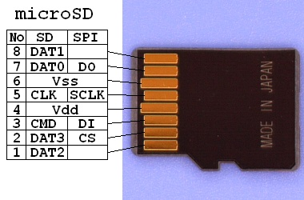
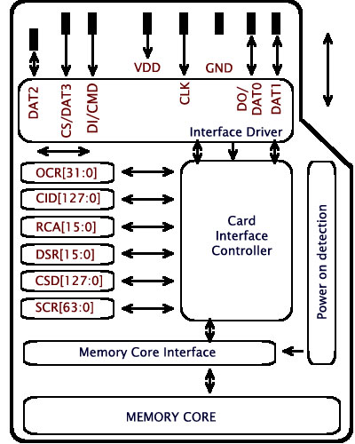
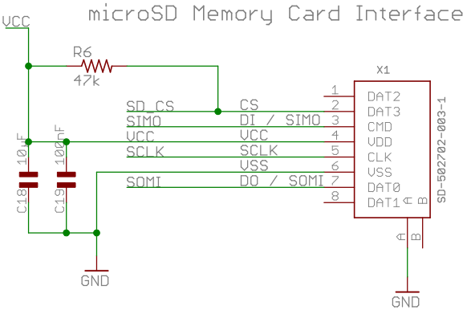
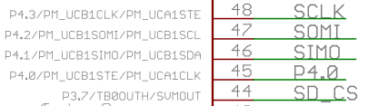

IIC2344 - Clase VII
Tarjeta uSD
José Luis Honorato L.
jlhonora@ing.puc.cl
Tarjeta uSD
- SD:Secure Digital
- Tarjeta de hasta 2MB, hasta 32 GB para SDHC (High Capacity)
- Tiene un microcontrolador dentro de ella
- Se comunica por SPI, clock hasta 25 MHz (400 kHz en inicialización)
Tarjeta uSD
- Pin-compatible con tarjeta SD, MMC y mini SD
Características
- Memoria dividida por bloques o sectores de bytes, default: 512 bytes
- Memoria flash NAND
- Opera entre 2.7 y 3.6V
- Consume entre 10 y 100 mA (antes de inicializar y al escribir, respectivamente)
- SD version 1.0
Estructura interna
Registros
- OCR: Operating conditions (Voltaje operación, estado de capacidad)
- CID: Card identification (fabricante, número serial)
- CSD: Datos operacionales (versión, velocidad de lectura, tamaño de la tarjeta)
- RCA: Relative card address
- DSR: Driver stage register
- SCR: SD Card configuration register
- Más información en documento SD Physical Layer Spec (Siding)
Protocolo SD
- Para enviar y recibir datos se utiliza SPI
- Comandos de 6 bytes: 1 header, 4 argumentos, 1 checksum
Protocolo SD
- Después de enviar un comando recibimos la respuesta desde la tarjeta
- Cada comando tiene pre-definido un tipo de respuesta (R1, R2, etc)

- Si la respuesta tiene datos asociados se reciben a continuación
Protocolo SD
- Algunos comandos
Registro CSD
- Contiene información relevante sobre la tarjeta
READ_BL_LEN: Tamaño de los sectores (bytes/sector)C_SIZE: Número de sectoresC_SIZE_MULT: Multiplicador- Tamaño:
(C_SIZE + 1)*2^(C_SIZE_MULT + 2 + READ_BL_LEN)
Escritura y lectura
- Hasta ahora hemos hablado de sectores y bytes
- Con esto no es posible escribir archivos y luego leerlos en el PC con un adaptador de tarjeta SD
- Necesitamos una librería que maneje los sectores y monte un sistema de archivos
FatFS
- Librería en C que implementa FAT para tarjetas SD
- Tamaño pequeño, usaremos FAT16. Desventajas:
- Tamaño máximo 2 gigabytes
- No pueden haber más de 512 elementos en la carpeta root
- Límites en el tamaño de los nombres de los archivos
- Capa de abstracción para el hardware, SPI y se implementa localmente
- En orden descendiente de jerarquía: FatFS > MMC > SPI
Controlador MSP
Controlador MSP
- Comparte puerto SPI con LCD!
Controlador MSP - Modo SPI
- Modo SPI 0 (Clock no invertido, captura de datos en primer flanco de clock, cambio en el segundo)
- Igual que LCD
- Seleccionar SD o LCD con sus respectivos Chip Select
- CS en 0 selecciona el periférico
RTC
- RTC: Real Time Clock
- Contador que genera eventos a intervalos exactos
- Usado generalmente para tener noción del tiempo en sistemas embebidos
- En general se calibra con un cristal de 32768 Hz
RTC
- Se deben setear registros de control y cristal LFXT1
- Setear/Leer hora y fecha en otros registros
- Para guardar consistencia entre la hora de su PC y la del msp, al compilar modficar archivo .c según hora local, luego compilar e instalar
Deadlines
- En 3 semanas (4 Junio) se entrega parte 1
- En 4 semanas (11 Junio) se entrega la experiencia